Azure AI Foundry · Semantic Kernel · Microsoft Fabric · Azure Bot Service
High-level view showing how the system works — technology-agnostic, designed for executive audiences.

| Component | Purpose |
|---|---|
| 🤖 AI Chatbot & Notifications | Customer-facing conversational AI. Handles both proactive notifications (system finds a beat) and reactive requests (customer submits a competitor price). Supports text, images, and URLs. |
| ⚙️ Admin Portal & Review Queue | Internal tool for the pricing team to manage competitor sources, configure LLPG rules, toggle features, and review/approve medium-risk price beat decisions. |
| 🧠 AI Intelligence Layer | Core AI engine performing: customer intent detection, product matching (brand/variant/size), LLPG rule evaluation (20+ business rules), image/label analysis for wine vintages, and fraud detection. |
| ⚡ Proactive Decision Engine | Classifies each price beat opportunity by risk level. Low-risk = auto-approve and notify customer. Medium-risk = route to human review queue. High-risk (fraud/excluded) = auto-reject and log. |
| � Intelligent Queue & Batch Control | Handles volume at scale. Groups related decisions into batches for bulk approval, dynamically adjusts auto-approval thresholds during surges, prioritises review items by revenue impact, and routes categories to specialist reviewers. |
| �📊 Unified Data Platform | Single source of truth combining real-time competitor prices (versioned with timestamps), historical price trends, unified product catalogue, and market insight analytics. |
| 🔄 Continuous Competitor Monitoring | Always-on scraping pipeline. Competitor URLs are configurable and extensible (add new competitors without code changes). Events flow through a real-time pipeline into the data platform. |
Detailed view with specific Azure and Microsoft services mapped to each layer of the solution.

| Layer | Azure / Microsoft Services | Purpose |
|---|---|---|
| Customer Experience | Azure Bot Service, Azure Communication Services, Azure API Management | AI chatbot (Web/Mobile/Teams channels), email/SMS notifications, secure API gateway with OAuth |
| Administration | Azure Static Web Apps, Power Automate, Microsoft Teams | Admin portal for URL/rule management, approval workflows for price beat review, Teams-based notification queue |
| AI Intelligence | Azure AI Foundry, Semantic Kernel, Azure OpenAI (GPT-4o / Vision / Embeddings), Azure AI Search | Multi-agent orchestration, LLM-powered intent/matching/rules, image analysis for screenshots & labels, vector search for product matching & LLPG knowledge base |
| Configuration | Azure Cosmos DB, Azure App Configuration | LLPG rule parameters and competitor source registry (Cosmos DB), feature flags and rule toggles (App Configuration) |
| Event Backbone | Azure Event Hubs, Azure Service Bus (Competing Consumers) | High-throughput price event streaming (Event Hubs), ordered transactional messaging for CHUB escalation (Service Bus), competing consumers for parallel team processing |
| Queue & Batch Control | Service Bus Sessions, Cosmos DB (thresholds), Data Activator (surge), Power Automate (bulk cards) | Batch grouping via sessions, adaptive auto-approval thresholds, real-time surge detection, Teams bulk approval cards for batch decisions |
| Unified Data Platform | Microsoft Fabric — Eventhouse, Lakehouse, Data Activator, Notebooks, Power BI + Copilot | Real-time KQL queries on price streams, Delta table historical archive, automated alert reflexes on price drops, Spark ML for trend analysis, natural language dashboards |
| Scraping Layer | Azure Container Apps + KEDA, Azure Functions | Auto-scaling Playwright scraping workers (scale to zero, burst at peak), timer-triggered scheduling and data quality normalization |
| Security & Compliance | Azure Key Vault, Microsoft Entra ID, Azure Private Link, Australia East Region | Secrets management, identity & access control, private networking for all PaaS services, Australian data residency compliance |
The Lowest Liquor Price Guarantee (LLPG) Rule Engine evaluates 15+ business rules to determine if a competitor price qualifies for a price beat. Each rule is implemented as a Semantic Kernel plugin — independently testable, configurable without code changes.
| Rule | What It Does |
|---|---|
| Beat Price Formula | Calculates the price to beat the competitor: 50c below for items under a threshold, $1 below for items above (configurable) |
| Normalised Unit Price | Converts competitor prices to comparable unit price (per-litre, per-can). Translates cart-level discounts to product level |
| Retailer Allow-List | Rejects the claim if the competitor is excluded (e.g., duty-free, wholesale-only) |
| Stock-for-Stock | Caps beat quantity to match competitor's available stock — checked across any store nationally |
| Promo Limit | If competitor promo only applies to limited quantity (e.g., max 2), beat price applies to same quantity |
| Delivery Fee Exclusion | Excludes delivery fees from comparison. Exception: "spend X, get free delivery" promos |
| Vintage & Label Matching | Strict matching for wine vintages and visual labels (baseline vs. premium) using AI Vision |
| Lightning Sale Validation | Validates that flash sales / happy hours are actually active at the exact time of processing |
| Member Discount Rejection | If competitor price is members-only (loyalty/club), the price beat does not apply |
| Clearance Detection | Identifies clearance items at competitors and responds with relevant messaging |
| Radius Rule | 10km radius rule (currently suspended, toggleable on/off via feature flag without code change) |
| RSA Compliance | Enforces Responsible Service of Alcohol floor price — alcohol cannot be sold below legal minimum |
| Fraud Risk Scoring | ML-based risk scoring to detect abuse (repeated claims, manipulated screenshots, fake URLs) |
When a competitor runs a site-wide sale or multiple competitors change prices simultaneously, thousands of beat decisions can arrive within minutes. This section explains how the architecture handles that at scale.
| Scenario | Estimated Volume |
|---|---|
| Single competitor site-wide sale (e.g., 20% off all spirits) | ~500–2,000 decisions simultaneously |
| Multiple competitors change prices on the same day | ~3,000–10,000 decisions |
| Holiday season (Boxing Day, EOFY) | Sustained high volume over days |
| New competitor added to monitoring | Initial backfill of entire catalogue |
| # | Strategy | What It Does | Azure Implementation |
|---|---|---|---|
| 1 | Batch Grouping | Groups related decisions by trigger (same competitor + same event). Team reviews the batch policy once → all items inherit the decision. | Service Bus sessions; Cosmos DB batch metadata |
| 2 | Adaptive Auto-Approval | Dynamically adjusts confidence thresholds. Normal: >95% auto-approve. Surge (queue >500): lowers to >85% + post-audit flag. | Cosmos DB threshold config; Azure Functions recalculates |
| 3 | Priority Queue with SLA | Scores items by revenue impact × time sensitivity. High-value surfaces first; low-value auto-approves after timeout. | Service Bus priority queues; Cosmos DB scoring |
| 4 | Category-Based Routing | Wine/vintage → wine expert. Spirits/beer → general team. Fraud → fraud analyst. | Service Bus topic subscriptions with category filters |
| 5 | Surge Detection | Monitors queue depth & arrival rate in real-time. Triggers team alerts, mode switches, staffing signals. | Fabric Data Activator; Power BI real-time dashboard |
| Queue Depth | Mode | Behaviour |
|---|---|---|
| < 100 | Normal | Strict thresholds, all medium-risk → human review |
| 100 – 500 | Elevated | Relax thresholds slightly, batch similar items |
| > 500 | Surge | Aggressive auto-approve, post-audit, bulk cards, team alerts |
All mode transitions are logged and auditable. Post-audit reports are generated automatically for decisions auto-approved during surge mode.